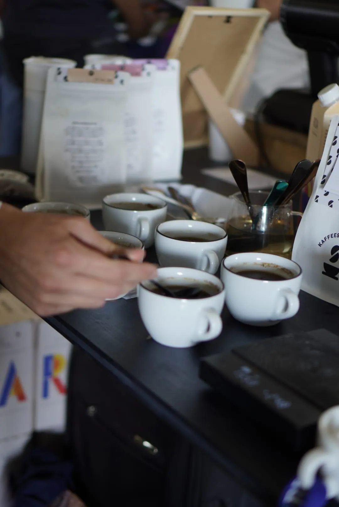
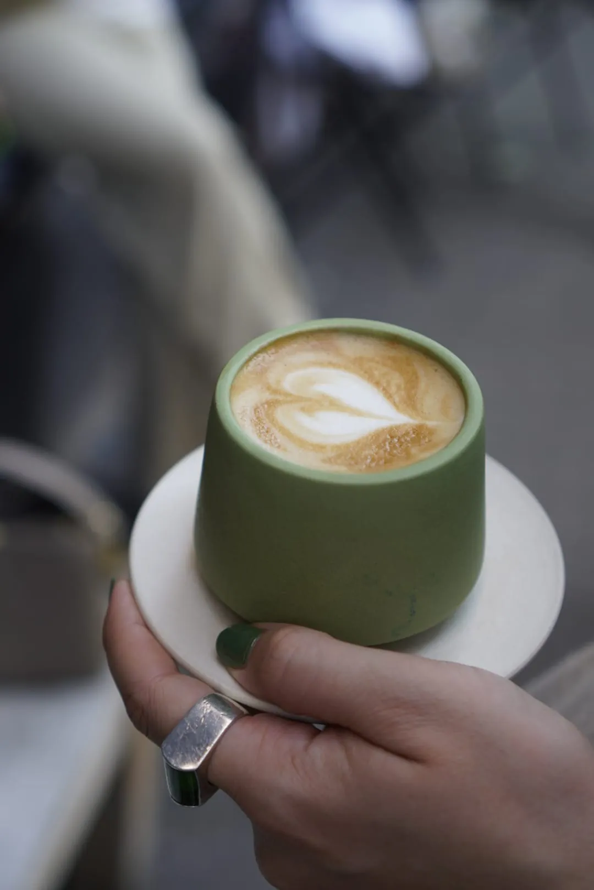
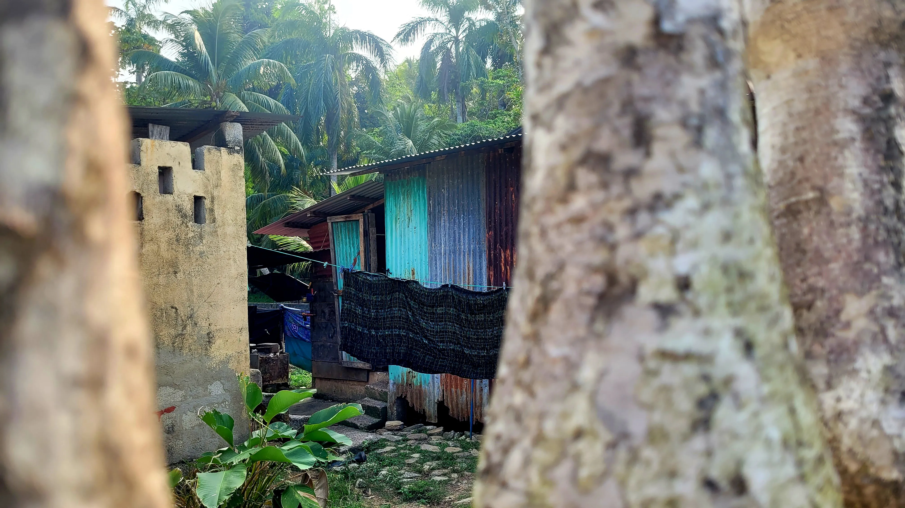
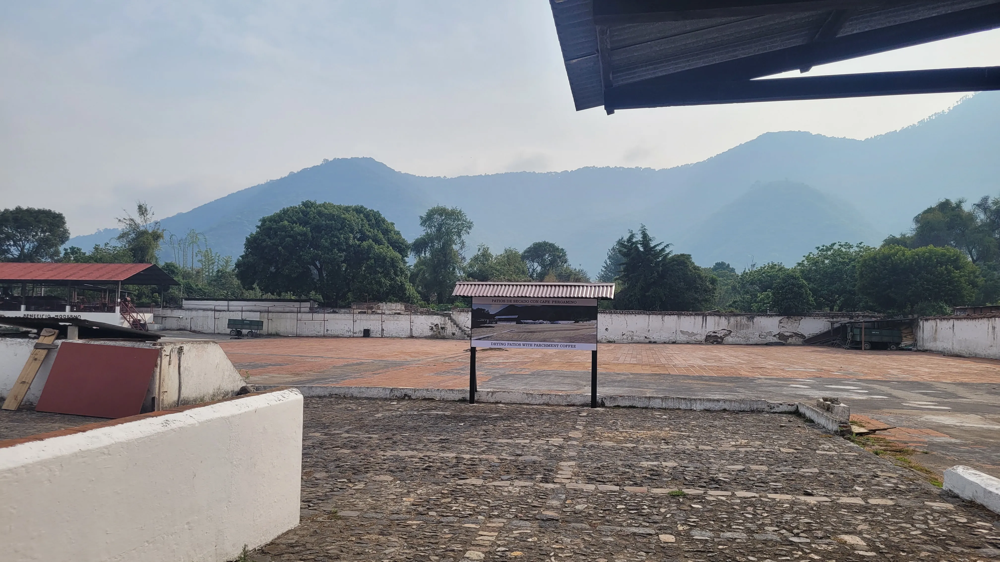
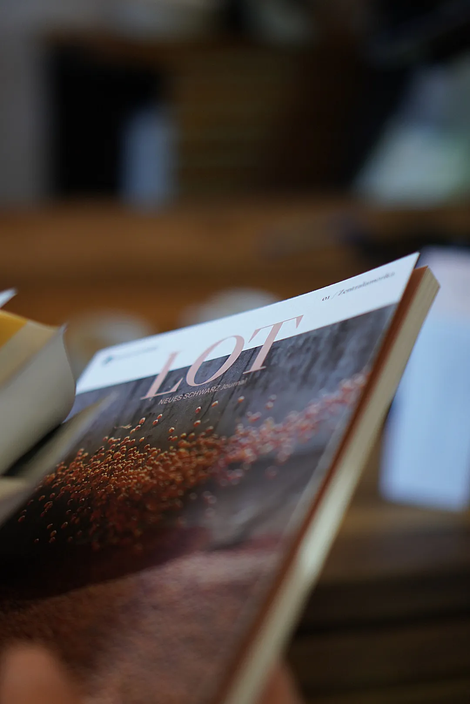

Special Interest
Beiträge · KI · Special Interest

Von der Kaffeekirsche zum Grünkaffee
Ein detaillierter Einblick in die verschiedenen Aufbereitungsmethoden von Kaffee – von Naturals über Washed Coffees bis hin zu innovativen Fermentationsverfahren wie Kohlensäuremazeration.
Artikel lesen →
Ein System muss neu gedacht werden
Kaffeeanbau in Brasilien ist geprägt von großen Plantagen, maschineller Ernte und Quantität. Wie sich das ändern kann und mit dem Klimawandel vereinbaren lässt.
Artikel lesen →
Kenias Kaffee kennenlernen
Kaffee, Kooperativen und Kleinbauern – das Netzwerk verstehen und den Charakter des kenianischen Kaffees kennenlernen.
Artikel lesen →
Sichtbarkeit beginnt beim Label
Immer mehr Kaffees tragen den Namen von Frauen. Nadine Rasch erzählt anlässlich des Weltfrauentags im Interview, warum das nicht immer so war.
Artikel lesen →Hier eine LOT Ausgabe lesen
